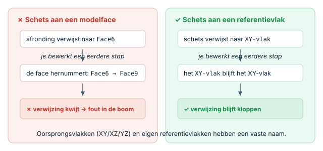

Robuust modelleren & het topological naming-probleemModélisation robuste & le nommage topologiqueRobust modelling & the topological naming problem
Soms "breekt" je model: je wijzigt een vroege stap en plots staan er foutmeldingen bij latere afrondingen of schetsen. Dat is het beruchte topological naming-probleem. Het goede nieuws: FreeCAD 1.0 en hoger heeft dit grotendeels opgelost. Met een paar robuuste gewoontes voorkom je de rest.Parfois le modèle "casse" après une modification : c'est le nommage topologique. Bonne nouvelle : FreeCAD 1.0+ l'a largement résolu. Quelques bonnes habitudes font le reste.Sometimes a model "breaks": you change an early step and later fillets or sketches suddenly show errors. That's the notorious topological naming problem. Good news: FreeCAD 1.0+ has largely solved it. A few robust habits handle the rest.
- uitleggen wat het topological naming-probleem isexpliquer le nommage topologiqueexplain the topological naming problem
- schetsen aan stabiele vlakken verankerenancrer les croquis sur des plans stablesanchor sketches to stable planes
- een gebroken feature-boom herkennen en herstellenrepérer et réparer un arbre casséspot and fix a broken feature tree
- Hang schetsen liefst aan een oorsprongsvlak (XY/XZ/YZ) of een eigen referentievlak (H14), niet aan een toevallige modelface.Ancrez sur un plan d'origine ou un plan de référence (H14), pas une face quelconque.Anchor sketches to an origin plane (XY/XZ/YZ) or your own datum plane (H14), not a random model face.
- Hou schetsen volledig vastgelegd (H05) met geometrische constraints (H08).Croquis entièrement contraints (H05/H08).Keep sketches fully constrained (H05) with geometric constraints (H08).
- Doe afrondingen en afkantingen op het einde van de boom.Congés/chanfreins en fin d'arbre.Do fillets and chamfers last in the tree.
- Gebruik een gekoppelde vorm (H15) voor verwijzingen tussen bodies.Utilisez une forme liée (H15) entre corps.Use a shape binder (H15) for references between bodies.
- Geef features een duidelijke naam zodat je de boom begrijpt.Nommez les features clairement.Give features clear names so you understand the tree.
01Wat is het topological naming-probleem?Qu'est-ce que le nommage topologique ?What is the topological naming problem?
FreeCAD verwijst intern naar vlakken en randen met namen als Face6 of Edge3. Hang je een afronding of een schets aan zo'n vlak, dan onthoudt FreeCAD die naam. Wijzig je daarna een eerdere stap in de boom (bv. een extra uitsparing), dan kan de nummering verschuiven: wat eerst Face6 was, wordt Face9. De afronding wijst dan plots naar het verkeerde vlak — en je krijgt een foutmelding.FreeCAD nomme faces/arêtes (Face6…). Modifier une étape antérieure peut renuméroter : la référence pointe ailleurs → erreur.FreeCAD refers to faces and edges by internal names like Face6. Edit an earlier step and the numbering can shift: the old Face6 becomes Face9, so a fillet now points to the wrong face — and you get an error.

02Goed nieuws: FreeCAD 1.0 en hogerBonne nouvelle : FreeCAD 1.0+Good news: FreeCAD 1.0 and up
Lange tijd was dit dé klassieke FreeCAD-frustratie. FreeCAD 1.0 introduceerde een nieuw algoritme dat vlakken en randen veel beter blijft volgen, ook na wijzigingen. In versie 1.1 (de doelversie van deze cursus) merk je het probleem daardoor veel minder. Toch blijft robuust modelleren verstandig: bij complexe modellen met veel verwijzingen scheelt het nog steeds, en het maakt je boom makkelijker te begrijpen en te wijzigen.FreeCAD 1.0 a introduit un nouvel algorithme : le problème est bien moindre en 1.1. La modélisation robuste reste utile sur les modèles complexes.For years this was the classic FreeCAD frustration. FreeCAD 1.0 introduced a new algorithm that tracks faces and edges much better. In 1.1 (this course's target) you'll notice it far less. Still, robust modelling pays off on complex models and keeps your tree easy to edit.
03Robuust ankeren: kies een stabiel vlakAncrer sur un plan stableAnchor to a stable plane
De belangrijkste gewoonte. Een schets in Part Design wordt verankerd ("attached") aan een vlak. Kies dat vlak bewust: een oorsprongsvlak (XY/XZ/YZ) of een eigen referentievlak (H14) heeft een vaste naam die nooit verschuift. Een toevallige modelface is veel vluchtiger. Door consequent aan stabiele vlakken te ankeren, leg je de fundering van je model op rots in plaats van op zand.Un croquis est "attaché" à un plan. Préférez un plan d'origine ou de référence (H14), au nom stable, plutôt qu'une face de modèle.The key habit. A sketch is "attached" to a plane. Choose it deliberately: an origin plane (XY/XZ/YZ) or your own datum plane (H14) has a fixed name; a random model face is far more volatile. Anchor to stable planes and you build on rock, not sand.
04Een gebroken boom herkennen en herstellenRepérer et réparerSpotting and fixing a broken tree
Breekt er toch iets, dan zet FreeCAD een foutmarkering bij de betrokken feature in de modelboom. De aanpak: dubbelklik de feature om hem te bewerken en selecteer de juiste verwijzing opnieuw (het juiste vlak of de juiste rand). Komt het vaak terug, her-anker dan de schets aan een oorsprongs- of referentievlak. Werk de boom van boven naar onder af; een fout bovenaan veroorzaakt vaak de fouten eronder.Une erreur apparaît sur la feature : double-clic, re-sélectionnez la bonne référence, ou ré-ancrez sur un plan de référence. Réparez de haut en bas.If something breaks, FreeCAD marks the feature with an error in the tree. Fix it: double-click to edit and re-pick the correct reference. If it recurs, re-anchor the sketch to an origin/datum plane. Work top-down; an error up high causes those below.
Een model is zo robuust als zijn verwijzingen. Verwijs naar stabiele referenties — oorsprongs- en referentievlakken — en je model overleeft latere wijzigingen zonder te breken.Un modèle vaut ses références. Référez-vous à des plans stables et il survit aux modifications.A model is only as robust as its references. Reference stable things — origin and datum planes — and it survives later edits.
In 1.1 zul je het probleem zelden tegenkomen, dus laat het je niet afschrikken. Maar maak van het ankeren aan oorsprongsvlakken toch een gewoonte: het kost niets extra en het houdt grotere modellen netjes en wijzigbaar.Rare en 1.1 ; gardez l'habitude d'ancrer aux plans d'origine.In 1.1 you'll rarely hit it, so don't be scared off. But make anchoring to origin planes a habit anyway — it's free and keeps big models tidy and editable.
Een behuizing die je vaak hertekent (een andere printplaat, een grotere accu) wil je robuust: anker de basisschets aan de oorsprong en stuur de maten met een spreadsheet (H20). Dan pas je één getal aan en volgt de hele behuizing — zonder gebroken boom.Un boîtier souvent retravaillé : ancrez à l'origine + tableur (H20).An enclosure you re-edit often (a different PCB, a bigger battery): anchor the base sketch to the origin and drive sizes from a spreadsheet (H20). Change one number and the whole box follows — no broken tree.
Neem een model waarin je een schets op een modelface hebt staan. Maak een referentievlak (H14) op die plaats en her-anker de schets eraan. Bewerk daarna een eerdere stap (voeg bv. een uitsparing toe) en controleer dat er niets breekt. Voel het verschil met de oude situatie.Ré-ancrez un croquis d'une face vers un plan de référence (H14), puis modifiez une étape antérieure et vérifiez.Take a model with a sketch on a model face. Make a datum plane (H14) there and re-anchor the sketch to it. Then edit an earlier step and check nothing breaks.
05Veelgemaakte foutenErreurs fréquentesCommon mistakes
- Alles aan modelfaces hangen. Verankerd aan toevallige vlakken breekt sneller. Kies oorsprongs-/referentievlakken.Tout sur des faces. Préférez les plans stables.Anchoring everything to faces. Use origin/datum planes instead.
- Afrondingen te vroeg. Doe ze laat, zodat eerdere wijzigingen ze niet in de war sturen.Congés trop tôt. Faites-les en fin.Fillets too early. Do them late so earlier edits don't disturb them.
- Schetsen niet volledig vastgelegd. Een nog niet vastgelegde schets schuift onverwacht bij wijzigingen (H05).Croquis pas figés (H05).Sketches not fully fixed. A loose sketch shifts unexpectedly (H05).
06Samenvatting
Het topological naming-probleem ontstaat doordat verwijzingen naar vlakken/randen kunnen verschuiven bij wijzigingen. FreeCAD 1.0+ heeft dit grotendeels opgelost, maar robuust modelleren blijft slim: anker schetsen aan stabiele vlakken (oorsprong/referentie, H14), hou ze volledig vastgelegd (H05), doe afrondingen laat, en gebruik gekoppelde vormen (H15) tussen bodies. Breekt er iets, bewerk dan de feature en herstel de verwijzing.Le nommage topologique : références qui se décalent. 1.0+ l'a réglé en grande partie. Ancrez sur des plans stables, contraignez, congés en fin, formes liées.The topological naming problem: references to faces/edges can shift on edits. FreeCAD 1.0+ largely fixed it, but robust habits still help: anchor to stable planes (H14), keep sketches fully fixed (H05), do fillets late, use shape binders (H15). If something breaks, edit the feature and restore the reference.
- Verwijzingen kunnen verschuiven → anker aan oorsprongs-/referentievlakken.Ancrez aux plans d'origine/référence.References can shift → anchor to origin/datum planes.
- 1.0+ lost het grotendeels op; robuuste gewoontes blijven nuttig.1.0+ le règle ; habitudes utiles.1.0+ mostly fixes it; robust habits still help.
- Volledig vastgelegde schetsen + afrondingen laat = stabiele boom.Croquis figés + congés en fin.Fully fixed sketches + fillets last = stable tree.